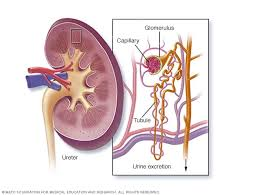

Consecuencias de la diabetes tipo 1
Si la diabetes tipo 1 no se trata adecuadamente, puede tener graves complicaciones, entre ellas:
- Daño en los nervios (neuropatía), especialmente en las piernas y pies
- Insuficiencia renal (nefropatía)
- Retinopatía diabética, que puede llevar a la ceguera
- Mayor riesgo de enfermedades cardíacas y accidentes cerebrovasculares
Consecuencias de la diabetes tipo 2
La diabetes tipo 2 mal controlada puede ocasionar complicaciones a largo plazo como:
- Problemas cardiovasculares graves, como ataques cardíacos
- Enfermedades renales crónicas
- Daño en los nervios, especialmente en las extremidades inferiores
- Infecciones recurrentes, especialmente en los pies
- Problemas de visión, incluyendo ceguera
